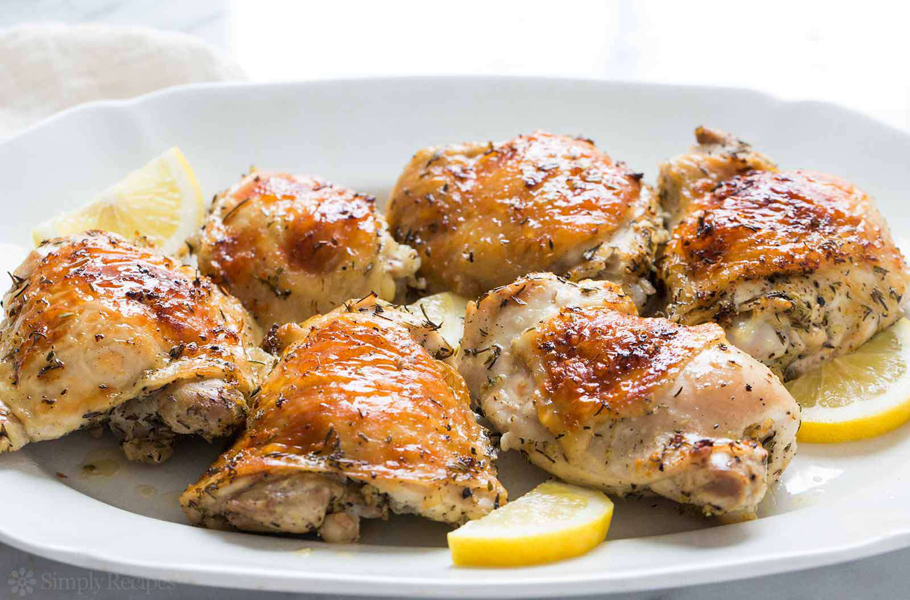

Lemon Chicken

Description
My grandmother rarely made anything other than chicken, so she had every recipe she used perfected! This one
happens to be our family's favorite.
Ingredients
- 1 large egg
- 1 cup all-purpose flour
- 1 teaspoon lemon-pepper seasoning, or to taste
- 4 skinless, boneless chicken breast halves
- ½ cup milk (Optional)
- 4 lemons, sliced
Steps to follow
- Preheat the oven to 350 degrees F (175 degrees C).
- Whip milk and egg together in a small bowl. Mix flour and lemon-pepper seasoning together in a another small
bowl.
- Dip chicken in the egg mixture and then in the flour to coat completely. Place milk and butter in the bottom of
a baking dish to keep the chicken nice and moist. Place coated chicken on top. Place lemon slices directly on
the chicken. Cover with foil.
- Bake in the preheated oven until almost cooked through, about 30 minutes. Remove foil and continue to bake until
no longer pink in the centers and juices run clear, about 15 minutes more. An instant-read thermometer inserted
into the center should read at least 165 degrees F (74 degrees C).